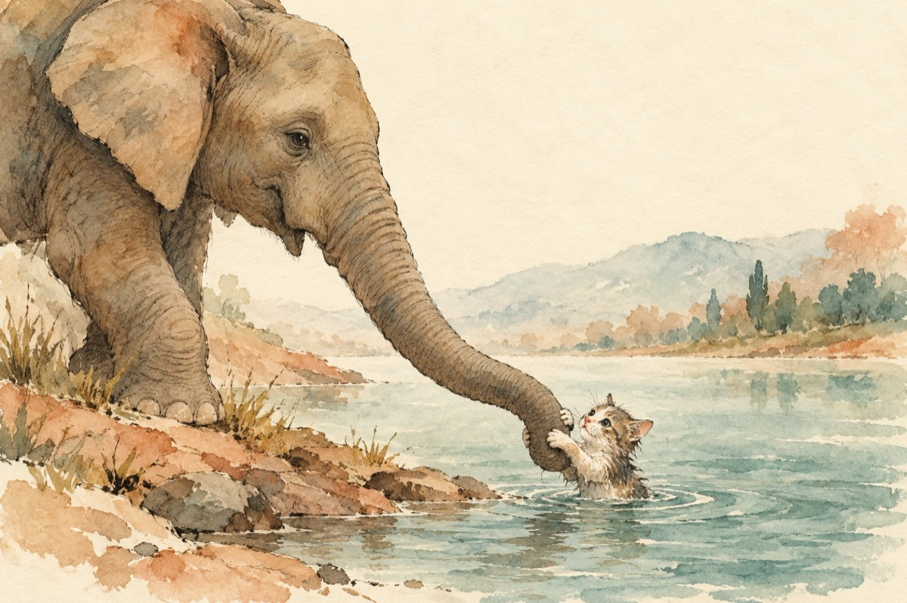

S.O.S
–Miau, miau, ajutor!...
–Da, te văd, te-aud, încerc,
Dar nu pot la tine să cobor!
–Ajutor, mi-e teamă că mă înec!
–Considere-mă un șoricel mic.
Și fă un salt în arc de cerc
Aruncă-te pe trompă, fă un șiretlic.
–Și dacă pic în apă și mă-nec?!...
–Fii fără frică, te prind cu trompa.
Hai pisicuțo; 1, 2, 3, și...
Da, vezi că ai prins ,,prada!?”
Ți-am spus eu că vei reuși?
Vasile Groza